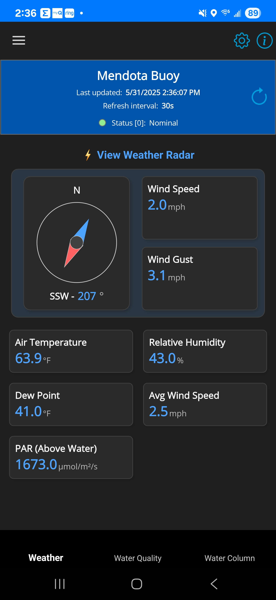

Projects
Lake Mendota Buoy App
A .NET MAUI cross-platform mobile application providing real-time environmental data from the Lake Mendota monitoring buoy and AOSS Tower at UW-Madison.
Features
- Real-time weather data monitoring
- Water quality measurements
- Water temperature column visualization
- AOSS Tower data integration
- Support for both metric and imperial units
Technologies Used
- .NET 8 MAUI
- C#
- MVVM architecture
- REST API integration
Download Beta APK
Last updated: Loading...

Weather Data View
Water Quality View

AOSS Tower Data